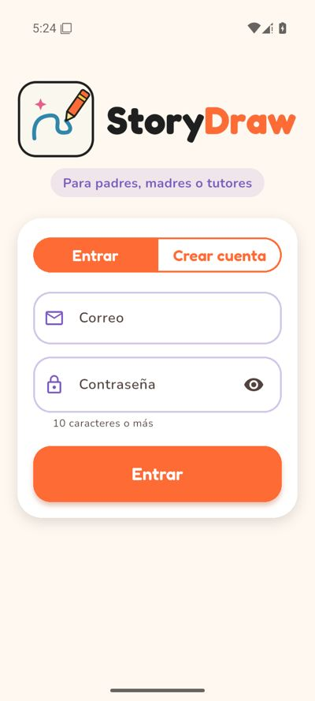
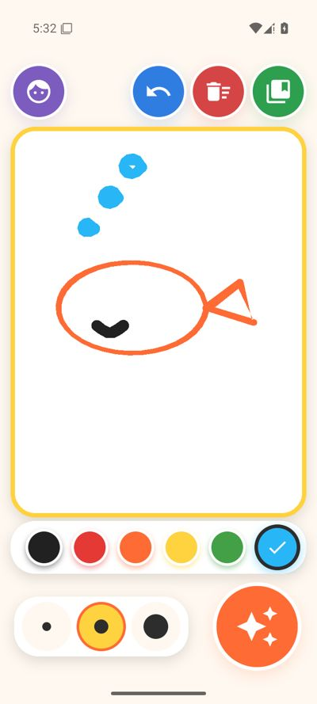
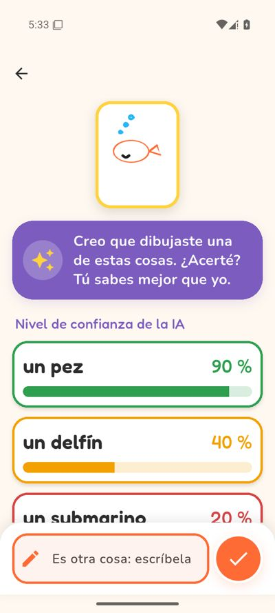
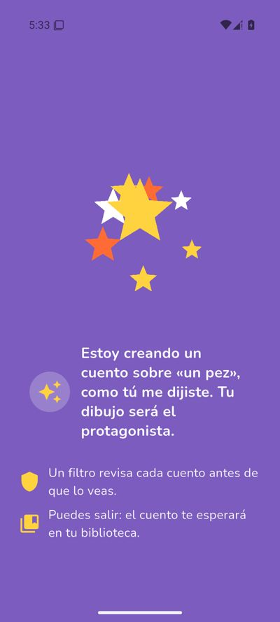
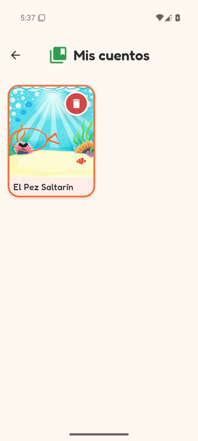
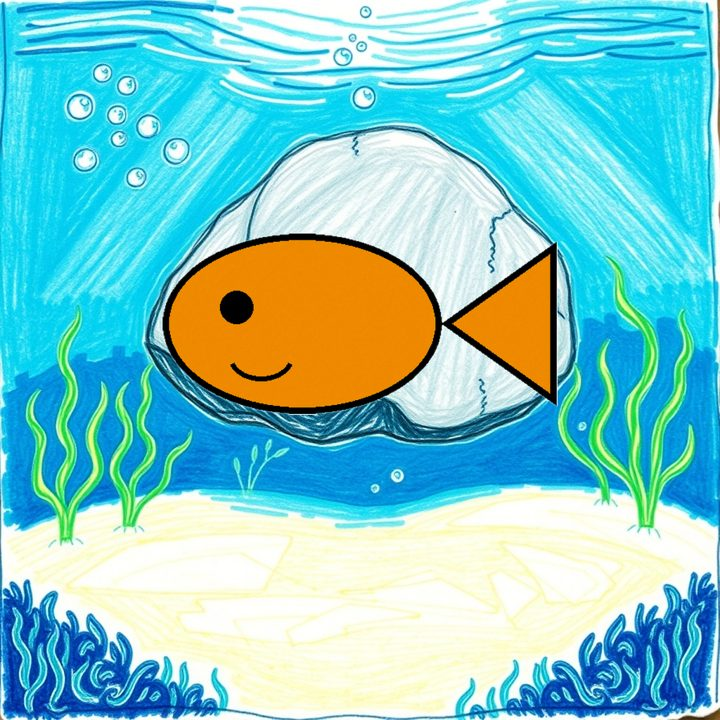
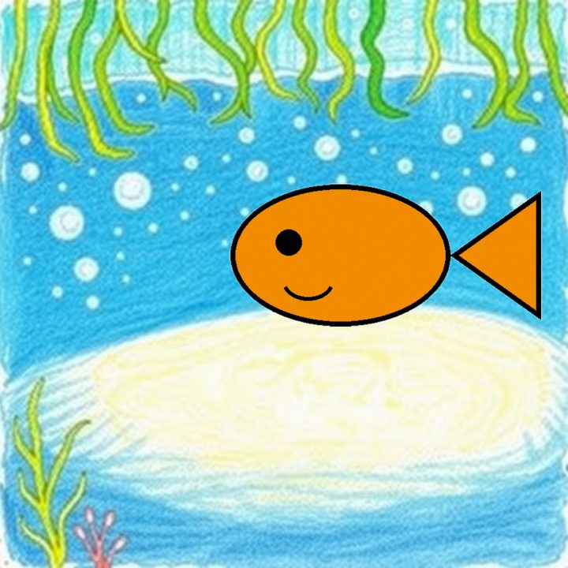

Instalar el APK
- Toca Descargar APK desde un celular Android.
- Abre el archivo. Si Android lo pide, permite instalar apps de ese origen (Instalar apps desconocidas).
- Abre StoryDraw y crea una cuenta; entra sin confirmar el correo.
- Si el servidor estaba en reposo, la primera respuesta tarda cerca de un minuto.
Versión 0.2.0 (compilación release, fuera de la tienda) · SHA-256 f93a58312c44dd90a32cbaa47f00191534bbe9e0d0b34f5593ae252a013f9b2d · release en GitHub
1Problema y contexto
Los niños dibujan mucho, pero el dibujo se queda en la hoja. Las apps de cuentos con IA inventan personajes ajenos y casi siempre exigen leer.
StoryDraw parte de lo que el niño ya hizo: su dibujo es el protagonista. La IA lo reconoce, escribe un cuento corto para su edad, lo ilustra con el dibujo dentro y lo narra en voz alta.
- Usuarios: niños de 6 a 12 años y el adulto responsable, que crea la cuenta y da el consentimiento.
- Restricciones: contenido para menores con moderación obligatoria, datos mínimos del niño (el dibujo no se guarda) y costo cero (servicios en plan gratuito).
- Para niños que aún no leen bien: íconos grandes, colores y voz.
2Casos de uso
| Actor | Caso de uso |
|---|---|
| Adulto | Crear la cuenta con consentimiento, entrar, salir y borrar la cuenta |
| Adulto | Crear y borrar perfiles de niño (apodo y edad) |
| Niño | Dibujar con el dedo (colores, grosores, deshacer) |
| Niño | Confirmar qué dibujó: la IA propone opciones con su nivel de confianza y el niño elige o escribe la suya |
| Niño | Ponerle nombre al personaje (opcional) |
| Sistema | Generar el cuento: reconocer, escribir, moderar, ilustrar y narrar |
| Niño | Esperar con una animación y luego leer o escuchar las tres páginas |
| Niño / adulto | Volver a ver sus cuentos en la biblioteca, también sin conexión, y borrar los que quiera |
| Operador | Ver tiempos, costo por cuento y cuentos rechazados por la moderación |
3Criterios de calidad
Pruebas (corridas el 2026-11-23 sobre la versión 0.2.0): backend 295 pruebas en verde (2 omitidas por requerir un servicio externo) · app 83 pruebas en verde · análisis estático sin errores.
- Seguridad infantil: todo texto pasa por dos moderadores de IA distintos más una lista de palabras bloqueadas, antes de que el niño vea algo. Si un moderador no responde, el cuento no se muestra.
- Privacidad: el dibujo no se guarda; las ilustraciones son privadas y solo las ve su dueño. Contraseñas cifradas y consentimiento del adulto obligatorio.
- Robustez: cada paso de IA se reintenta por separado y, si uno falla, el cuento sale igual con un aviso (por ejemplo, sin voz) en lugar de romperse. El backend tolera los límites del plan gratuito del proveedor de IA y avisa al usuario si no hay capacidad.
- Rendimiento medido en producción: reconocer el dibujo, unos 4 s; cuento completo con ilustraciones y voz, unos 40 s.
- Abuso: límite de peticiones por usuario y por día.
4Arquitectura técnica
En el celular, desliza el diagrama hacia los lados.
- App (Flutter): en capas (pantallas, estado, dominio, datos). No conoce a ningún proveedor de IA: solo habla con el backend, así que cambiar de modelo no exige publicar otra app.
- Backend (Python, FastAPI): arquitectura hexagonal. El dominio define qué necesita (ver, escribir, moderar, ilustrar, narrar) y cada proveedor es un adaptador intercambiable; para las pruebas hay adaptadores simulados.
- Asíncrono: la app pide el cuento, recibe respuesta al instante y consulta el avance mientras muestra la animación de espera.
- Datos: PostgreSQL para cuentas y cuentos; las ilustraciones y el audio van a un almacén privado.
- Despliegue gratuito: backend en Render, base de datos en Neon, web en GitHub Pages; la web se publica solo si pasan las pruebas.
5Integración de IA
| Paso | Modelo | Qué hace |
|---|---|---|
| Reconocer | Gemma 4 | Dice qué dibujó el niño, con su confianza, y sus rasgos (colores, partes) |
| Escribir | Gemma 4 | Cuento de 3 páginas para la edad, con el nombre y los rasgos reales del dibujo |
| Moderar | Llama Guard 3 + revisión infantil con Gemma 4 | Dos filtros que deben aprobar |
| Ilustrar | FLUX.1 schnell | Fondos en lápices de colores, con el hábitat del personaje y colores que contrastan con el dibujo |
| Narrar | Aura-2 (voz en español) | Lee cada página en voz alta |
Todos corren en Cloudflare Workers AI (plan gratuito). Las respuestas se piden en JSON con esquema estricto, y la imagen final la compone el backend: recorta el dibujo del niño y lo coloca sobre el fondo. Para trabajar sin internet, el mismo backend usa Ollama con un modelo local. Los textos exactos de los prompts están en la página de prompts.
6Funcionamiento
Probado el 2026-11-23 con este mismo APK en un emulador Android 15, contra el servidor de producción:
| Función | Resultado |
|---|---|
| Instalar, crear cuenta y entrar | Funciona |
| Crear perfil y dibujar | Funciona |
| Reconocer el dibujo | «un pez» 95 % |
| Cuento con 3 ilustraciones | «Las aventuras de Coral», con el dibujo en cada página |
| Voz | El audio de la página se descarga y se reproduce |
| Biblioteca, salir y volver a entrar | Funciona |
7Flujo principal
- Acceso: el adulto crea la cuenta y acepta el consentimiento.
- Perfil: elige quién va a dibujar o crea un perfil.
- Dibujo: el niño dibuja con el dedo.
- Reconocimiento: la IA propone qué es y el niño confirma.
- Espera: animación mientras se crea el cuento.
- Cuento: tres páginas ilustradas con voz; queda en la biblioteca.








Otro ejemplo real




«Había una vez un pez llamado Burbuja. Burbuja era de color naranja y tenía una gran sonrisa. Vivía muy feliz en el fondo del mar…» — Las aventuras de Burbuja.
8Documentos técnicos
- README del repositorio: arquitectura, cómo correrlo y pruebas.
- Contexto del proyecto: decisiones, estado y glosario.
- Prompts de construcción y del producto (criterio SWNT).
Tecnologías: Flutter · Riverpod · Python · FastAPI · SQLAlchemy · PostgreSQL · Pillow · Cloudflare Workers AI · Render · Neon · GitHub Pages.